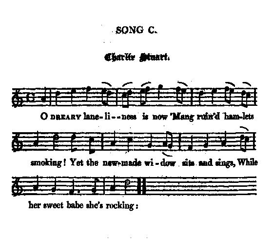

Charlie Stuart
O dreary loneliness
From Cromek's "Remains of Nithsdale and Galloway Song", 1810, page 201
ascribed by Gilbert Samuel McQuoid, in his "Jacobite Songs - 1888", page 507, to Allan CunninghamTune - Mélodie
"Barbara Allan"
from Hogg's "Jacobite Relics" 2nd Series N°100 page 94
Sequenced by Christian Souchon

|
To the tune:
"This short and pithy song is from Cromek. I hope it is old, yet scarcely think so. The air is " Barbara Allan," to which it has evidently been composed." (Hogg in"Jacobite Relics, vol. 2, 1821). Cromek asserts in his book (page 201): "These songs, with the exception of one or two pieces have been taken down from recitation chiefly of Catholic families, in Nithsdale and Galloway, by whom they were preserved and communicated with an enthusiasm proportioned to their attachment to the cause...". In fact, many songs in his collection proved to be forgeries by Allan Cunningham, but this particular song did not. The last line is remarkably ambiguous. "The Ballad of Barbara Allen ", also known as "Barbara Ellen," "Barbara Allan," "Barb'ry Allen," "Barbriallen," etc., is a folk song known in dozens of versions. The author is unknown, but the song may have originated in England, Ireland, or Scotland. The earliest known mention of the song is in Samuel Pepys' diary for January 2. 1666 where he refers to the "little Scotch song of 'Barbary Allen'". Source: Wikipedia. However the customary tune is notably different from the version notated by Hogg: here sequenced by Barry Taylor (cf.links) One of the numberless versions of this ballad reads as follows (1st and last stanza): It was in and about the Martinmas time, When the green leaves were a-falling, That Sir John Graeme in the west countrie Fell in love with Barbara Allan... "O mother, mother, make my bed, O make it fast and narrow! Since my luve died for me today, I'll die for him tomorrow." From David Herd's "Ancient and Modern Scottish Songs", volume I, 1769 or 1776. |
A propos de la mélodie:
"Ce chant spirituel et laconique est tiré du recueil de Cromek. J'espère qu'il est ancien, mais j'ai du mal à le croire. L'air est "Barbara Allan" pour lequel les paroles ont été visiblement composées." (Hogg in"Jacobite Relics, vol. 2, 1821). Cromek affirme dans son livre (page 201): "Ces chants, à une ou deux exceptions près, ont été recueillis dans des familles, principalement catholiques de Nithsdale et de Galloway, qui les ont conservés et communiqués avec un enthousiasme à la mesure de leur attachement à la cause..." En fait, beaucoup de chants du recueil se sont avérés être des forgeries d'Allan Cunningham, mais ce n'est pas le cas de celui-ci. On remarquera combien le dernier vers est ambigu. "La "Ballade de Barbara Allen", également intitulée "Barbara Ellen", "Barbara Allan", "Barb'ry Allen", etc. est un chant populaire dont il existe une douzaine de versions. L'auteur en est inconnu et l'origine peut être aussi bien l'Angleterre que l'Irlande ou l'Ecosse. La plus ancienne mention de ce chant se trouve dans le journal de Samuel Pepy, à la date du 2 janvier 1666, où il est question de "la petite chanson écossaise de 'Barbara Allen'". Source: Wikipedia. Cependant la mélodie la plus répandue diffère sensiblement de celle notée par Hogg: la voici dans l' arrangement de Barry Taylor (cf. liens). L'une des innombrables versions de cette ballade s'énonce comme suit (1er et dernier couplet): C'était aux environs de la Saint-Martin, Quand l'automne frappait à la porte, Que pour Sir John Graham, rongée de chagrin, Barbara Allan est morte... "O ma mère, ma mère, faites mon lit, Un lit étroit, et faites-le vite! Si mon amoureux est mort aujourd'hui, Demain je prendrai sa suite." Recueilli par David Herd dans ses "Ancient and Modern Scottish Songs", volume I, édition de 1769 ou 1776. |

|
CHARLIE STUART
1. O dreary loneliness is now Mong ruined hamlets smoking! Yet the new-made widow sits and sings While her sweet babe she's rocking: 2. " On Darien think, on dowie Glencoe , " On Murray , traitor! coward ! " On Cumberland 's blood-blushing hands, " And think on Charlie Stuart," Source: "Cromek's "Remains of Nithsdale and Galloway Song", 1810, page 201 |
CHARLIE STUART
1. Sur les ruines fumantes de ce hameau Il règne une solitude affreuse La jeune veuve chante à son marmot Dans ses bras cette berceuse: 2. "N'oublie ni le sombre Glencoe, ni Darien, Ni Murray de traîtrise notoire, Ni Cumberland, et garde longtemps De Charlie Stuart la mémoire." (Trad. Christian Souchon (c) 2010) |